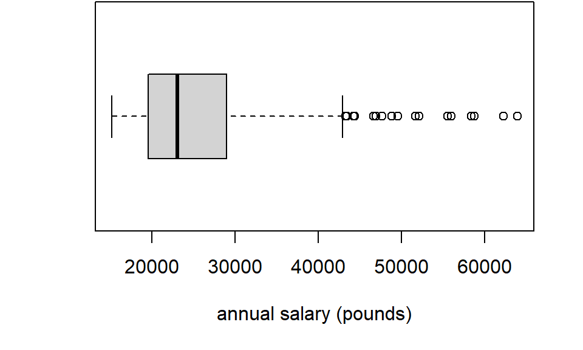

5 Chapter 1 problems
- Annual salaries for 1000 full-time employees have been recorded. The data are displayed in a box plot below. The data are stored in R in a vector called
salary. - If the data were instead plotted with a histogram, sketch the approximate shape of the histogram. (Concentrate on the basic shape of the histogram: do not worry about the detail.)
- Using the following R output
## Min. 1st Qu. Median Mean 3rd Qu. Max.
## 15166 19599 23063 24937 28960 63981What value would best describe a `typical’ salary? Justify your answer. What does the output tell you about variation in salaries?
- ``Anscombe’s quartet’’ is a set of four data sets, constructed by the statistician Francis Anscombe (1918-2001), and shown below.
## x1 y1 x2 y2 x3 y3 x4 y4
## [1,] 10 8.04 10 9.14 10 7.46 8 6.58
## [2,] 8 6.95 8 8.14 8 6.77 8 5.76
## [3,] 13 7.58 13 8.74 13 12.74 8 7.71
## [4,] 9 8.81 9 8.77 9 7.11 8 8.84
## [5,] 11 8.33 11 9.26 11 7.81 8 8.47
## [6,] 14 9.96 14 8.10 14 8.84 8 7.04
## [7,] 6 7.24 6 6.13 6 6.08 8 5.25
## [8,] 4 4.26 4 3.10 4 5.39 19 12.50
## [9,] 12 10.84 12 9.13 12 8.15 8 5.56
## [10,] 7 4.82 7 7.26 7 6.42 8 7.91
## [11,] 5 5.68 5 4.74 5 5.73 8 6.89Each dataset is made up of 11 pairs \((x_1,y_1),\ldots,(x_{11},y_{11})\) so, for example, for the first dataset, the observations are \((10, 8.04),\ (8, 6.95),\ldots,(5, 5.68)\). All four data sets have the same summary statistics (correct to 1 d.p.): \[ \sum_{i=1}^{11}x_i = 99,\quad \sum_{i=1}^{11}x_i^2 = 1001,\quad \sum_{i=1}^{11}y_i = 82.5,\quad \sum_{i=1}^{11}y_i^2 = 660.2,\quad \sum_{i=1}^{11}x_iy_i = 797.6. \]
Using the summary statistics, calculate Pearson’s correlation coefficient between the \(x\) and \(y\) observations in each dataset (it will be the same for all four data sets).
Do you agree with the following statement?
Each dataset has the same value of Pearson’s correlation coefficient, therefore, the relationship between the two variables must be the same in each dataset.
If you want to see the four datasets, run this code in R:
data(anscombe)
x <- c(anscombe$x1, anscombe$x2, anscombe$x3, anscombe$x4)
y <- c(anscombe$y1, anscombe$y2, anscombe$y3, anscombe$y4)
df <-data.frame(x=x, y =y, dataset = factor(rep(c("dataset 1",
"dataset 2",
"dataset 3",
"dataset 4"), each = 11)))
library(ggplot2)
ggplot(df, aes(x=x, y=y))+
geom_point()+
facet_wrap(~dataset, ncol = 2)- Challenge problem. Consider the PISA mathematics scores dataset in Chapter 1. If GDP per capita were instead measured in Euros rather than US$ (and assuming 1 Euro \(\neq\) 1 dollar), prove that this would give a different value of the covariance between maths score and GDP per capita, but would not change the value of either Pearson’s or Spearman’s correlation.